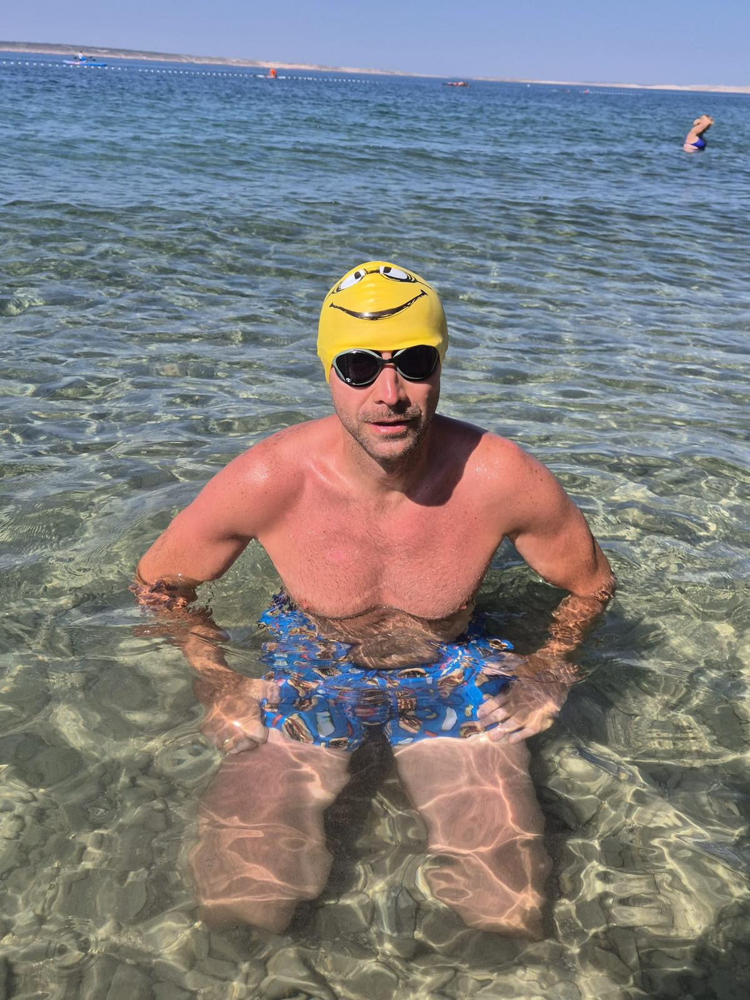
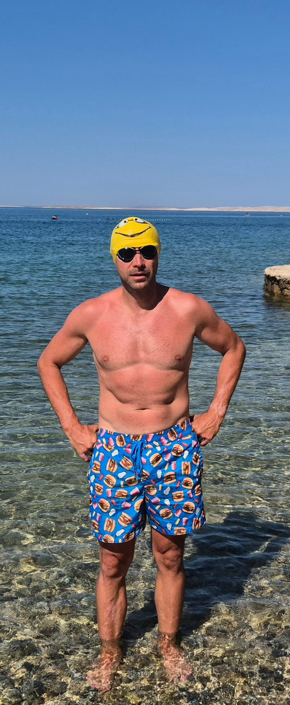

Dzieci
Oswojenie z wodą, budowanie pozytywnego nastawienia i pewności siebie. Spokojna, cierpliwa nauka dostosowana do wieku — bez pośpiechu i presji.
- Pierwszy kontakt z wodą
- Zanurzanie, wydech do wody, leżenie
- Podstawy stylów pływackich
Indywidualna nauka i doskonalenie pływania dla dzieci, młodzieży i dorosłych. Spokojnie, cierpliwie i w tempie dopasowanym do uczestnika — od pierwszego kontaktu z wodą aż po dopracowaną technikę.

assets/img/marcin-hero.jpg
Jestem instruktorem nauki pływania, ratownikiem WOPR oraz nauczycielem Edukacji dla Bezpieczeństwa. Posiadam wieloletnie doświadczenie w prowadzeniu zajęć z zakresu nauki i doskonalenia pływania — zarówno dla dzieci i młodzieży, jak i osób dorosłych.
W pracy z uczestnikami stawiam przede wszystkim na bezpieczeństwo, indywidualne podejście oraz stopniowe zdobywanie pewności siebie w wodzie.
Jako ratownik WOPR z około 20-letnim doświadczeniem doskonale znam zasady bezpiecznego zachowania nad wodą i w jej bezpośrednim otoczeniu. Jednocześnie staram się tworzyć przyjazną atmosferę, dzięki której uczestnicy przełamują swoje obawy i czerpią radość z aktywności w wodzie.
Jestem również nauczycielem Edukacji dla Bezpieczeństwa — łączę praktyczne umiejętności związane z bezpieczeństwem w wodzie z wiedzą dotyczącą udzielania pierwszej pomocy oraz właściwego reagowania w sytuacjach zagrożenia.
„Moim celem jest nie tylko nauczenie pływania, ale przede wszystkim sprawienie, aby uczestnik czuł się w wodzie bezpiecznie i swobodnie.” Marcin Kędzior
Zajęcia dostosowuję do wieku, poziomu umiejętności oraz indywidualnych potrzeb uczestnika — od pierwszego wejścia do wody po doskonalenie poszczególnych stylów.
Oswojenie z wodą, budowanie pozytywnego nastawienia i pewności siebie. Spokojna, cierpliwa nauka dostosowana do wieku — bez pośpiechu i presji.
Poprawa techniki, wytrzymałości i swobody w wodzie. Przygotowanie do sprawdzianów, obozów, zawodów oraz innych form aktywności pływackiej.
Nauka od podstaw — także dla osób, które mają obawy przed wodą. Spokojne tempo, zrozumienie i realne postępy krok po kroku.
Dla osób, które już pływają i chcą pływać lepiej: efektywność ruchów, ekonomia pływania i prawidłowa praca oddechowa.
Każdy element wprowadzam stopniowo, w tempie dopasowanym do uczestnika.
Posiadam doświadczenie związane z udziałem w zawodach pływackich, między innymi w stylu klasycznym, potocznie nazywanym „żabką”.
Dzięki temu podczas zajęć zwracam uwagę nie tylko na samo pokonywanie dystansu, ale również na technikę, efektywność ruchów, prawidłową pracę oddechową oraz ekonomię pływania.

Około 20 lat pracy jako ratownik WOPR to nie tylko uprawnienia — to nawyk czujności, który towarzyszy każdym zajęciom.
Nie ma jednego programu dla wszystkich. Plan powstaje po pierwszym spotkaniu i zmienia się razem z postępami uczestnika.
Szczególnie przy dzieciach i osobach z obawą przed wodą — bez presji, bez pośpiechu, z pozytywnym nastawieniem.
Jako nauczyciel Edukacji dla Bezpieczeństwa uczę również właściwego reagowania w sytuacjach zagrożenia.
Doświadczenie startowe przekłada się na precyzyjną korektę ruchów, oddechu i ekonomii pływania.
Jasne cele na każdy etap — od pierwszego wydechu do wody po przepłynięcie całej długości basenu.
Ustalamy wiek, poziom, cele oraz dogodny termin i miejsce zajęć.
Sprawdzamy aktualne umiejętności i komfort w wodzie — bez oceniania.
Dobieram ćwiczenia i tempo do uczestnika oraz jego celów.
Systematyczna praca nad techniką, oddechem i pewnością siebie.
Omawiamy efekty i wyznaczamy kolejne cele.
Zajęcia prowadzę dla dzieci, młodzieży i dorosłych. O szczegóły dotyczące najmłodszych uczestników proszę zapytać podczas kontaktu — dobór metody zależy od wieku i indywidualnej gotowości dziecka.
Tak. Obawa przed wodą jest częsta również u dorosłych. Zaczynamy od spokojnego oswojenia z wodą, w płytkiej części, w tempie w pełni dopasowanym do Państwa komfortu. Bezpieczeństwo i poczucie kontroli są na pierwszym miejscu.
Tak — zapraszam na indywidualne zajęcia dostosowane do poziomu uczestnika. Dzięki temu mogę poświęcić pełną uwagę technice i bezpieczeństwu jednej osoby.
Strój kąpielowy, czepek, okularki pływackie, ręcznik, klapki i przybory do higieny. Sprzęt pomocniczy (deski, makarony) zapewniam podczas zajęć.
To kwestia bardzo indywidualna — zależy od wieku, predyspozycji, częstotliwości zajęć i wcześniejszych doświadczeń z wodą. Realny plan przedstawiam po pierwszym spotkaniu.
Tak. Prowadzę przygotowanie do sprawdzianów, zawodów oraz innych form aktywności pływackiej — z naciskiem na technikę, oddech i ekonomię pływania.
Zapraszam dzieci, młodzież oraz dorosłych na indywidualną naukę i doskonalenie pływania.
Zapisz się na naukę pływaniaProszę o wiadomość z informacją o wieku uczestnika, aktualnym poziomie oraz preferowanych terminach — odezwę się z propozycją.